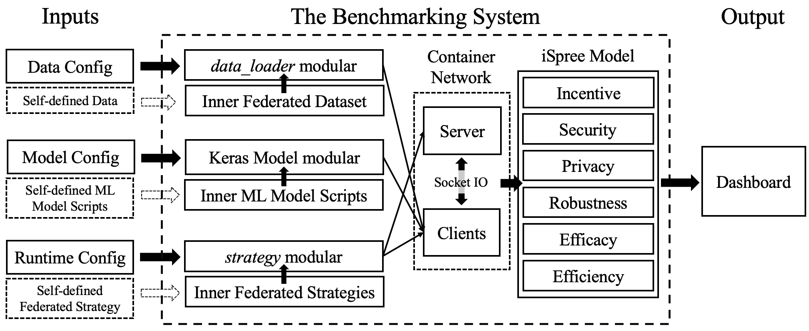

1. Introduction¶
1.1. The ACTPR Evaluation Model¶
The ACTPR model is the core of our benchmarking system. It defines five evaluation metrics for the FL systems: Accuracy, Communication, Time consumption, Privacy and Robustness.
1.2. The Benchmarking System: FedEval¶

Having motivated the need for an easy-to-evaluate and lightweight benchmarking system, we propose a federated benchmarking system called FedEval shown in the above figure, which demonstrates the inputs, inner architecture, and outputs of the system. Our ACTPR evaluation model is built inside the benchmarking system. Three key modules are designed in the system:
Data config and the data_loader module: Our benchmarking system provides four standard federated learning datasets, and different data settings (e.g., non-IID data) can be implemented by changing the data configs. Self-defined data is also supported. We only need to define the load_data function in data_loader module to add a new dataset, which will share the same set of processing functions with the built-in datasets.
Model config and the tf_wrapper module: Four machine learning models are built inside our system, including MLP, LeNet, MobileNet, and ResNet50. We use TensorFlow as the backend, and the tf_wrapper module handles the model training and predictions. Thus we can benefit from the flexibility of building models using TensorFlow and no need to worry about the training process. Self-defined ML models are also supported. To add a new model, we only need to provide the scripts of building the model architecture, and the tf8_wrapper module will take are of the model training and predictions.
Runtime config and the strategy module: One of the essential components in our benchmarking system is the strategy module, which defines the protocol of the federated training, e.g., which parameters are uploaded by the clients, how the parameters are aggregated at the server, how the global parameters are updated to local, and so on. Self-defined strategies are supported. To comprehensively evaluate a new federated learning method using the ACTPR model, we only need to implement the federated learning method in the strategy module.
We use the docker container technology to simulate the server and clients (i.e., each participant is a container), and use socket IO in the communication. The isolation between different containers guarantees that our simulation can reflect the real-world application. The entire system is open-sourced, four benchmark FL datasets and four benchmark ML models are included in the system. The essential components (i.e., dataset, ML models, and FL strategy) can be easily used or self-defined. Thus researches can implement their new idea and evaluate with ACTPR model very quickly.
Briefly, three steps are needed to start an experiment in our benchmarking system:
Step 1: Determine the benchmark dataset, ML model, and FL strategy, then modify the data, model, and runtime configs based on the templates.
Step 2: Use the built-in tool to generate data for clients and create the docker-compose files.
Step 3: Start the experiments using docker-compose, and monitor the dashboard for the evaluation status and results.